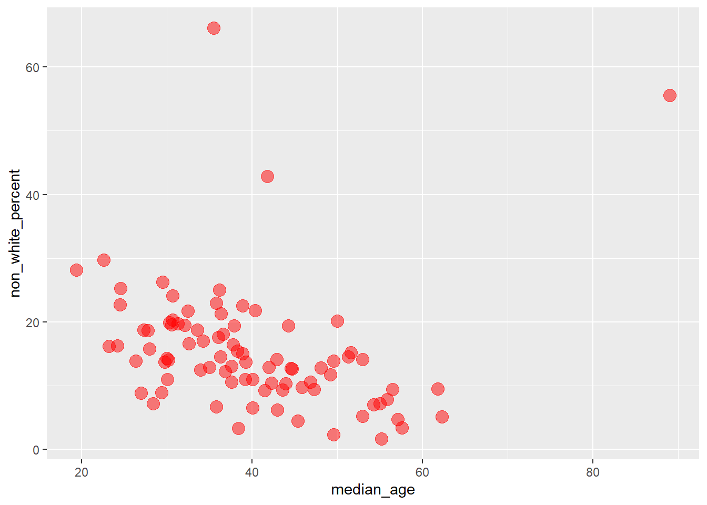
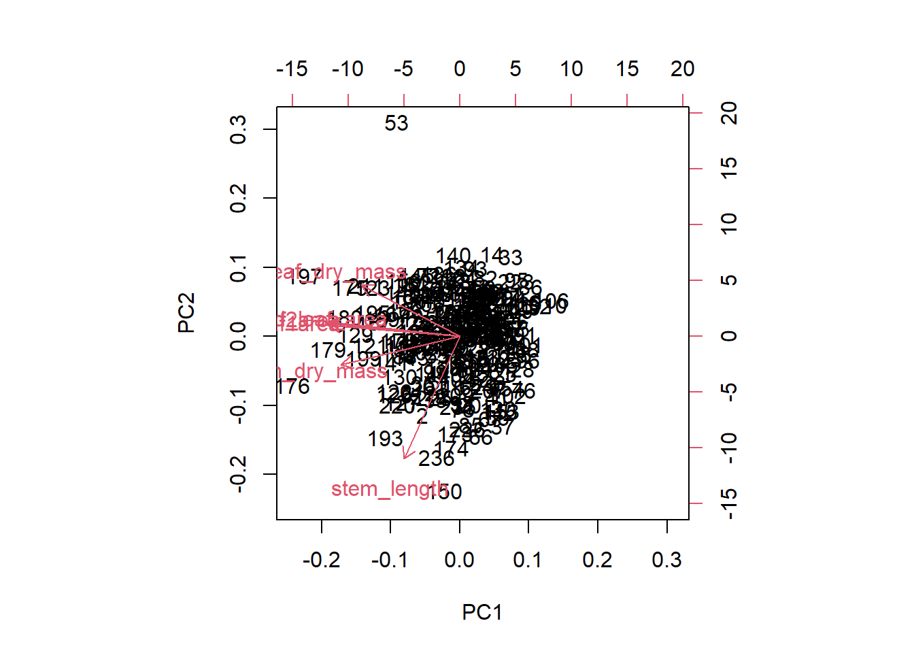
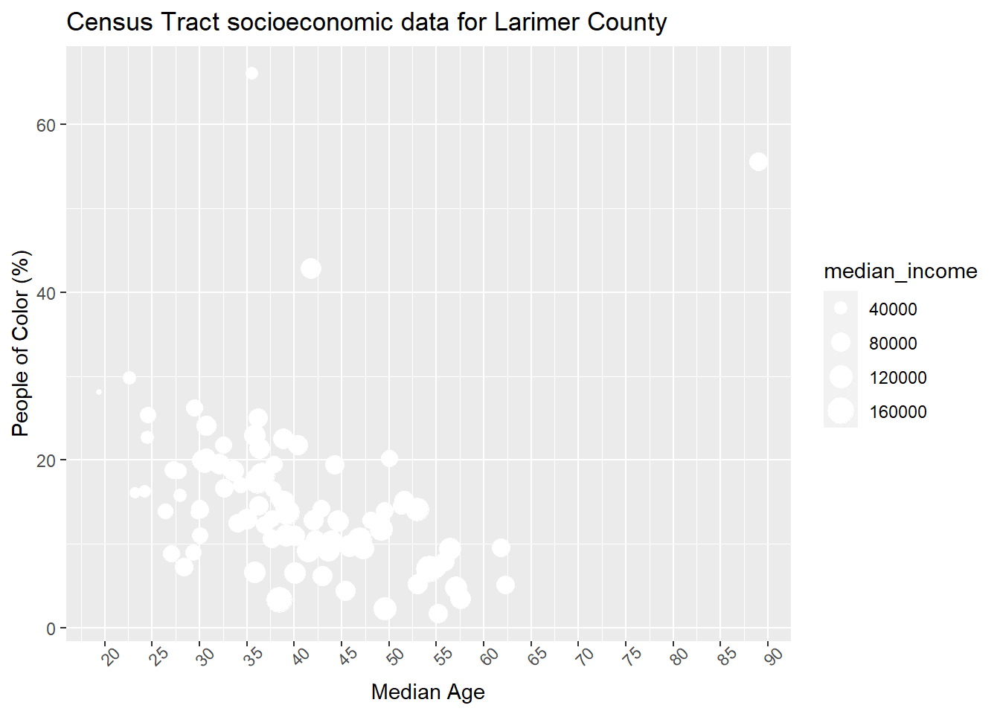
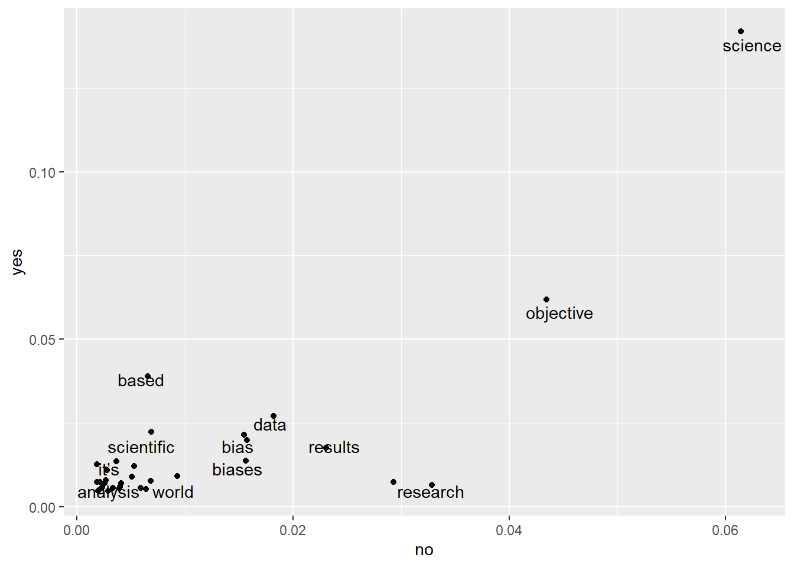
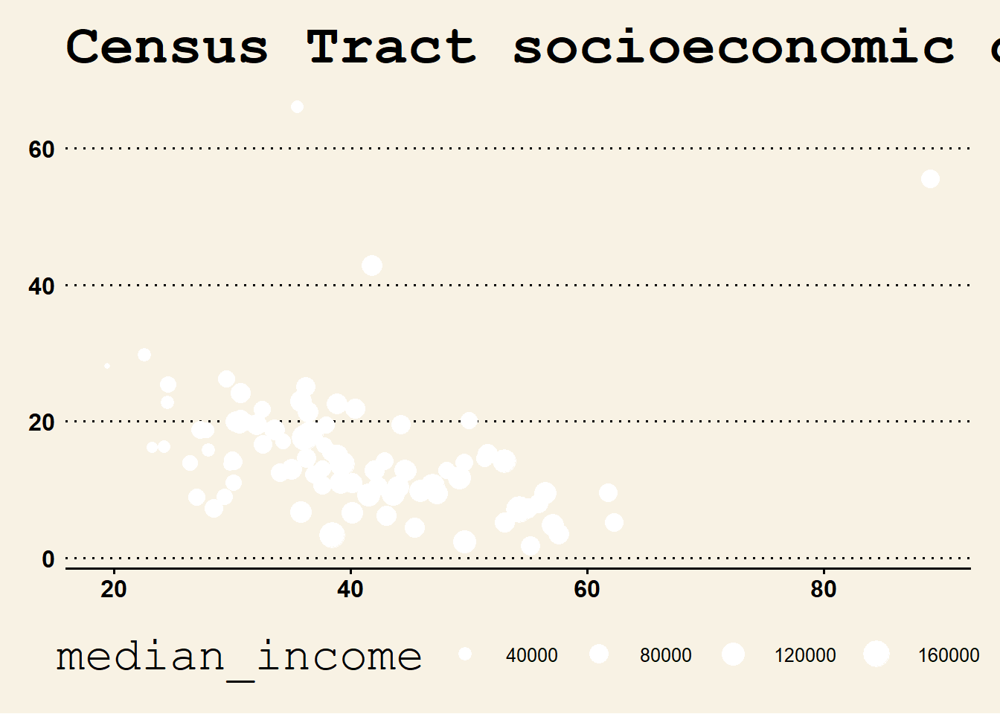
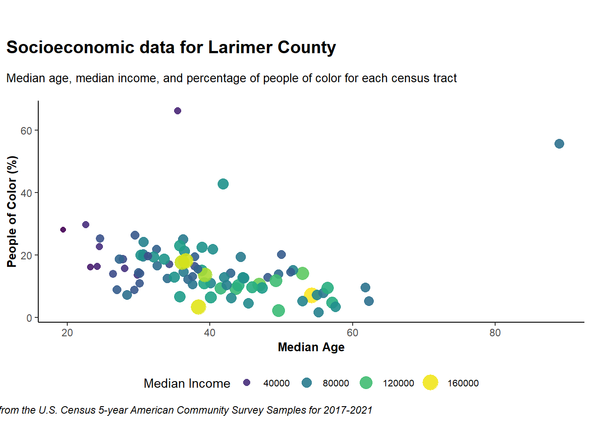
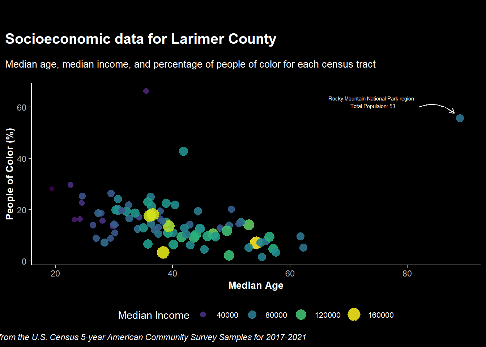
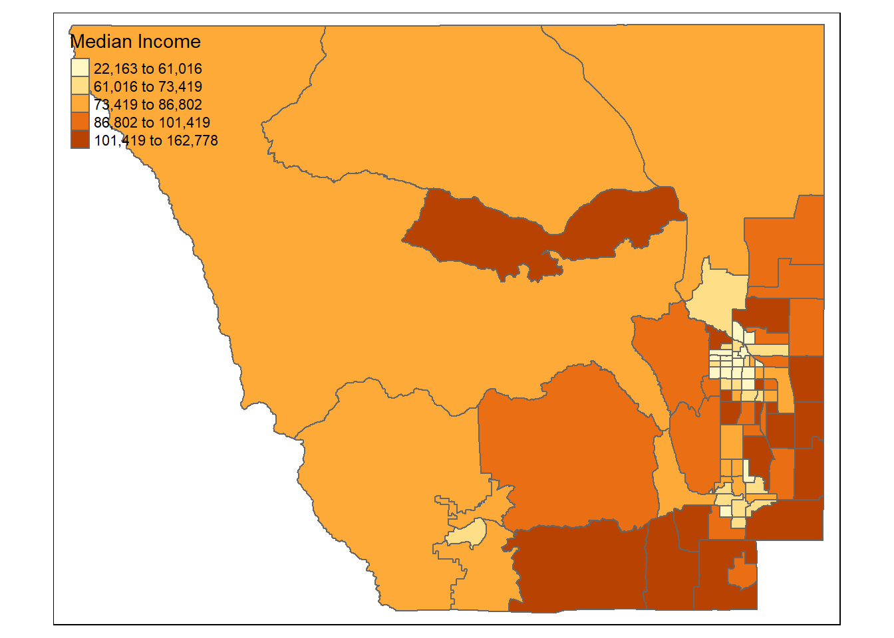
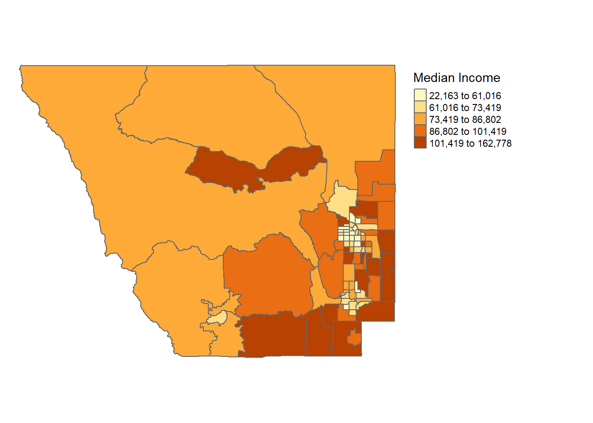
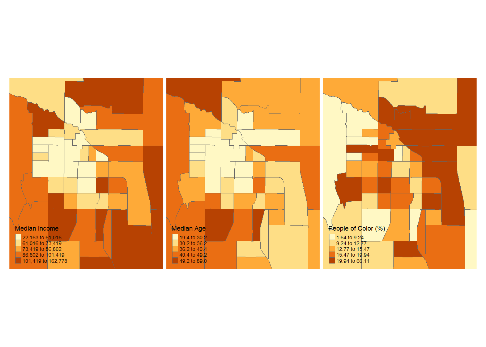

9 Data Visualization in R
This lesson will go a little deeper into data visualization and how to customize figures and tables and make them ‘publication ready’.
First start by reading in the packages for this lesson:
library(tidyverse) #which includes ggplot2
library(plotly) # for interactive plots
library(tmap) # interactive and static maps
library(sf) # to manage spatial data to make maps
library(tigris) # to import census tract spatial data9.0.1 Data Preparation
For today’s lesson we are going to be working with some census data for Larimer County, CO. This data can be found on Canvas in .csv format titled larimer_census.csv. Download that file and put it in your data/ folder in the R Project you will be using for this lesson.
After that, read the .csv into your R session:
census_data <- read_csv("data/larimer_census.csv")## Rows: 86 Columns: 11
## ── Column specification ────────────────────────────────────────────────────────────────────────────────────
## Delimiter: ","
## chr (2): GEOID, NAME
## dbl (9): median_income, median_age, non_white_percent, White, Black, Native, Asian, HIPI, Hispanic
##
## ℹ Use `spec()` to retrieve the full column specification for this data.
## ℹ Specify the column types or set `show_col_types = FALSE` to quiet this message.Inspect census_data and the structure of the data frame. This data contains information on median income, median age, and race and ethnicity for each census tract in Larimer County.
Note: This census data for Larimer county was retrieved entirely in R using the tidycensus package. If you are interested in how I did this, I’ve uploaded the script to do so on Canvas titled ‘getCensusData.R’. Note that you will need to retrieve your own census API key and paste it at the top of the script to run it (API keys are free and easy to get here). To learn more about tidycensus, check out Analyzing U.S. Census Data by Kyle Walker.
In the second half of this lesson we will be making maps, so we will need to retrieve spatial data in the form of census tract polygons for Larimer County. We can use the tigris package you used in the Introduction to Spatial Data lesson to import a Larimer County census tract shapefile. We also want to just keep the GEOID column, as it will make our data join later on cleaner (i.e., we only need to keep the spatial data and an ID column).
larimer_tracts <- tracts(state = "CO", county = "Larimer") %>%
select(GEOID)## Retrieving data for the year 2021## Using FIPS code '08' for state 'CO'## Using FIPS code '069' for 'Larimer County'Now in order to visualize our census tract attributes spatially, we need to join the census_data to larimer_tracts. We use the function full_join(), specify the two variables we want to join, and specify the name of the column in each that we want to join by (i.e., the column that is consistent between the two). In this case we want to use the column GEOID, which is a unique number given to each census tract in the US.
We want to create a new variable that will become an sf object we can map with tmap later.
census_spatial <- full_join(larimer_tracts, census_data, by = ("GEOID"))When you inspect this output, you can see that it is a spatial sf multipolygon object, where the data is exactly the same as our census_data data frame but now there is a geometry column/attribute tied to it.
9.1 Publication Ready Figures with ggplot2
For this exercise you will learn how to spruce up your ggplot2 figures with theme customization, annotation, color palettes, and more.
To demonstrate some of these advanced visualization techniques, we will be analyzing the relationships among some census data for Larimer county.
Let’s start with this basic plot:
census_data %>%
ggplot(aes(x = median_age, y = non_white_percent))+
geom_point()
And by the end of this lesson turn it into this:

9.1.1 General Appearance
Note that these customizations will vary depending on what geom_ you are using.
9.1.1.1 Customize points within geom_point()
color or size points by a variable or apply a specific color/number
change the transparency with
alpha(ranges from 0-1)
#specific color and size value
census_data %>%
ggplot(aes(x = median_age, y = non_white_percent))+
geom_point(color = "red", size = 4, alpha = 0.5)
When sizing or coloring points by a variable in the dataset, it goes within aes():
# size by a variable
census_data %>%
ggplot(aes(x = median_age, y = non_white_percent))+
geom_point(aes(size = median_income), color = "red")
# color by a variable
census_data %>%
ggplot(aes(x = median_age, y = non_white_percent))+
geom_point(aes(color = median_income), size = 4)
9.1.1.2 Titles and limits
add title with
ggtitleedit axis labels with
xlab()andylab()change axis limits with
xlim()andylim()
census_data %>%
ggplot(aes(x = median_age, y = non_white_percent))+
geom_point(aes(size = median_income))+
ggtitle("Census Tract socioeconomic data for Larimer County")+
xlab("Median Age")+
ylab("People of Color (%)")+
xlim(c(20, 70))+
ylim(c(0, 35))## Warning: Removed 4 rows containing missing values (`geom_point()`).
Be cautious of setting the axis limits however, as you notice it omits the full dataset which could lead to dangerous misinterpretations of the data.
You can also put multiple label arguments within labs() like this:
census_data %>%
ggplot(aes(x = median_age, y = non_white_percent))+
geom_point(aes(size = median_income))+
labs(
title = "Census Tract socioeconomic data for Larimer County",
x = "Median Age",
y = "People of Color (%)"
) +
xlim(c(20, 70))+
ylim(c(0, 35))## Warning: Removed 4 rows containing missing values (`geom_point()`).
9.1.1.3 Chart components with theme()
All ggplot2 components can be customized within the theme() function. The full list of editable components (there’s a lot!) can be found here. Note that the functions used within theme() depend on the type of components, such as element_text() for text, element_line() for lines, etc.
census_data %>%
ggplot(aes(x = median_age, y = non_white_percent)) +
geom_point(aes(size = median_income)) +
ggtitle("Census Tract socioeconomic data for Larimer County") +
xlab("Median Age") +
ylab("People of Color (%)") +
theme(
#edit plot title
plot.title = element_text(size = 16, color = "blue"),
# edit x axis title
axis.title.x = element_text(face = "italic", color = "orange"),
# edit y axis ticks
axis.text.y = element_text(face = "bold"),
# edit grid lines
panel.grid.major = element_line(color = "black"),
)
Another change you may want to make is the value breaks in the axis labels (i.e., what values are shown on the axis). To customize that for a continuous variable you can use scale_x_continuous() / scale_y_continuous (for discrete variables use scale_x_discrete ). In this example we will also add anlge = to our axis text to able the labels so they are not too jumbled:
census_data %>%
ggplot(aes(x = median_age, y = non_white_percent)) +
geom_point(aes(size = median_income)) +
ggtitle("Census Tract socioeconomic data for Larimer County") +
xlab("Median Age") +
ylab("People of Color (%)") +
scale_x_continuous(breaks = seq(15, 90, 5))+
theme(
# angle axis labels
axis.text.x = element_text(angle = 45)
)
While these edits aren’t necessarily pretty, we are just demonstrating how you would edit specific components of your charts. To edit overall aesthetics of your plots you can change the theme.
9.1.1.4 Themes
ggplot2 comes with many built in theme options (see the complete list here).
For example, see what theme_minimal() and theme_classic() look like:
# bw theme
census_data %>%
ggplot(aes(x = median_age, y = non_white_percent)) +
geom_point(aes(size = median_income)) +
ggtitle("Census Tract socioeconomic data for Larimer County") +
xlab("Median Age") +
ylab("People of Color (%)")+
theme_minimal()
census_data %>%
ggplot(aes(x = median_age, y = non_white_percent)) +
geom_point(aes(size = median_income)) +
ggtitle("Census Tract socioeconomic data for Larimer County") +
xlab("Median Age") +
ylab("People of Color (%)")+
theme_classic()
You can also import many different themes by installing certain packages. A popular one is ggthemes. A complete list of themes with this package can be seen here
To run this example, first install the ggthemes package and then load it in to your session:
install.packages("ggthemes")library(ggthemes)Now explore a few themes, such as theme_wsj, which uses the Wall Street Journal theme, and theme_economist and theme_economist_white to use themes used by the Economist,
census_data %>%
ggplot(aes(x = median_age, y = non_white_percent)) +
geom_point(aes(size = median_income)) +
ggtitle("Census Tract socioeconomic data for Larimer County") +
xlab("Median Age") +
ylab("People of Color (%)")+
ggthemes::theme_wsj()
This one looks quite messy out of the box, but you can apply any elements from theme() afterwards. For example, change the legend position:
census_data %>%
ggplot(aes(x = median_age, y = non_white_percent)) +
geom_point(aes(size = median_income)) +
ggtitle("Census Tract socioeconomic data for Larimer County") +
xlab("Median Age") +
ylab("People of Color (%)")+
ggthemes::theme_wsj()+
theme(
legend.position = "bottom"
)
Note you may need to click ‘Zoom’ in the Plot window to view the figure better.
census_data %>%
ggplot(aes(x = median_age, y = non_white_percent)) +
geom_point(aes(size = median_income)) +
ggtitle("Census Tract socioeconomic data for Larimer County") +
xlab("Median Age") +
ylab("People of Color (%)")+
ggthemes::theme_economist()
9.1.2 Color, Size and Legends
9.1.2.1 Color
To specify a single color, the most common way is to specify the name (e.g., "red") or the Hex code (e.g., "#69b3a2").
You can also specify an entire color palette. Some of the most common packages to work with color palettes in R are RColorBrewer and viridis. Viridis is designed to be color-blind friendly, and RColorBrewer has a web application where you can explore your data requirements and preview various palettes.
First, if you want to run these examples install the RColorBrewer and viridis packages:
install.packages("RColorBrewer")
install.packages("viridis")library(RColorBrewer)
library(viridis)Now, lets color our points using the palettes in viridis. To customize continuous color scales with viridis we use scale_color_viridis().
census_data %>%
ggplot(aes(x = median_age, y = non_white_percent)) +
geom_point(aes(size = median_income, color = median_income)) +
ggtitle("Census Tract socioeconomic data for Larimer County") +
xlab("Median Age") +
ylab("People of Color (%)")+
viridis::scale_colour_viridis()
Second, let’s see how to do that with an RColorBrewer palette, using the ‘Greens’ palette and scale_color_distiller() function. We add direction = 1 to make it so that darker green is associated with higher values for income.
census_data %>%
ggplot(aes(x = median_age, y = non_white_percent)) +
geom_point(aes(size = median_income, color = median_income)) +
ggtitle("Census Tract socioeconomic data for Larimer County") +
xlab("Median Age") +
ylab("People of Color (%)")+
scale_color_distiller(palette = "Greens", direction = 1)
9.1.2.2 Size
You can edit the range of the point radius with scale_radius :
census_data %>%
ggplot(aes(x = median_age, y = non_white_percent)) +
geom_point(aes(size = median_income, color = median_income)) +
ggtitle("Census Tract socioeconomic data for Larimer County") +
xlab("Median Age") +
ylab("People of Color (%)")+
scale_color_distiller(palette = "Greens", direction = 1)+
scale_radius(range = c(0.5, 6))
9.1.2.3 Legends
In the previous plots we notice that two separate legends are created for size and color. To create one legend where the circles are colored, we use guides() like this, specifying the same title for color and size:
census_data %>%
ggplot(aes(x = median_age, y = non_white_percent)) +
geom_point(aes(size = median_income, color = median_income)) +
ggtitle("Census Tract socioeconomic data for Larimer County") +
xlab("Median Age") +
ylab("People of Color (%)")+
scale_color_distiller(palette = "BuGn", direction = 1)+
scale_radius(range = c(2, 6))+
theme_minimal()+
#customize legend
guides(color= guide_legend(title = "Median Income"), size=guide_legend(title = "Median Income"))
9.1.3 Annotation
Annotation is the process of adding text, or ‘notes’ to your charts. Say we wanted to highlight some details to specific points in our data, for example some of the outliers.
When investigating the outlying point with the highest median age and high percentage of people of color, it turns out that census tract includes Rocky Mountain National Park and the surrounding area, and also the total population of that tract is only 53. Lets add these details to our chart with annotate(). This function requires several arguments:
geom: type of annotation, most oftentextx: position on the x axis to put the annotationy: position on the y axis to put the annotationlabel: what you want the annotation to sayOptional:
color,size,angle, and more.
census_data %>%
ggplot(aes(x = median_age, y = non_white_percent)) +
geom_point(aes(size = median_income, color = median_income)) +
ggtitle("Census Tract socioeconomic data for Larimer County") +
xlab("Median Age") +
ylab("People of Color (%)")+
scale_color_distiller(palette = "BuGn", direction = 1)+
scale_radius(range = c(2, 6))+
theme_minimal()+
guides(color= guide_legend(title = "Median Income"), size=guide_legend(title = "Median Income"))+
# add annotation
annotate(geom = "text", x=76, y = 62,
label = "Rocky Mountain National Park region \n Total Populaion: 53")
We can also add an arrow to point at the data point the annotation is referring to with geom_curve and a few other arguments like so:
census_data %>%
ggplot(aes(x = median_age, y = non_white_percent)) +
geom_point(aes(size = median_income, color = median_income)) +
ggtitle("Census Tract socioeconomic data for Larimer County") +
xlab("Median Age") +
ylab("People of Color (%)") +
scale_color_distiller(palette = "BuGn", direction = 1) +
scale_radius(range = c(2, 6)) +
theme_minimal() +
guides(color = guide_legend(title = "Median Income"),
size = guide_legend(title = "Median Income")) +
annotate(geom = "text",
x = 74,
y = 62,
label = "Rocky Mountain National Park region \n Total Populaion: 53") +
# add arrow
geom_curve(
aes(
x = 82,
xend = 88,
y = 60,
yend = 57.5
),
arrow = arrow(length = unit(0.2, "cm")),
size = 0.5,
curvature = -0.3
)
Note that with annotations you may need to mess around with the x and y positions to get it just right. Also, the preview you see in the ‘plot’ window may look jumbled and viewing it by clicking ‘Zoom’ can help.
9.1.4 Finalize and save
We are almost done with this figure. I am going to add/change a few more elements below. Feel free to add your own!
census_data %>%
ggplot(aes(x = median_age, y = non_white_percent)) +
geom_point(aes(size = median_income, color = median_income), alpha = 0.9) +
labs(
title = "Socioeconomic data for Larimer County",
subtitle = "Median age, median income, and percentage of people of color for each census tract",
x = "Median Age",
y = "People of Color (%)",
caption = "Data obtained from the U.S. Census 5-year American Community Survey Samples for 2017-2021"
)+
scale_radius(range = c(2, 6)) +
theme_classic() +
scale_color_viridis() + #use the Viridis palette
guides(color = guide_legend(title = "Median Income"),
size = guide_legend(title = "Median Income")) +
theme(
axis.title = element_text(face = "bold", size = 10),
plot.title = element_text(face = "bold",size = 15, margin = unit(c(1,1,1,1), "cm")),
plot.subtitle = element_text(size = 10, margin = unit(c(-0.5,0.5,0.5,0.5), "cm")),
plot.caption = element_text(face = "italic", hjust = -1),
plot.title.position = "plot", #sets the title to the left
legend.position = "bottom",
legend.text = element_text(size = 8)
) +
annotate(geom = "text",
x = 74,
y = 62,
label = "Rocky Mountain National Park region \n Total Populaion: 53",
size = 2) +
geom_curve(
aes(
x = 82,
xend = 88,
y = 60,
yend = 57.5
),
arrow = arrow(length = unit(0.2, "cm")),
size = 0.5,
curvature = -0.3
)
Want to make it dark theme?
ggdark is a fun package to easily convert your figures to various dark themes. If you want to test it out, install the package and try dark_theme_classic() instead of theme_classic() in the previous figure:
install.packages("ggdark")library(ggdark)census_data %>%
ggplot(aes(x = median_age, y = non_white_percent)) +
geom_point(aes(size = median_income, color = median_income), alpha = 0.9) +
labs(
title = "Socioeconomic data for Larimer County",
subtitle = "Median age, median income, and percentage of people of color for each census tract",
x = "Median Age",
y = "People of Color (%)",
caption = "Data obtained from the U.S. Census 5-year American Community Survey Samples for 2017-2021"
)+
scale_radius(range = c(2, 6)) +
dark_theme_classic() +
scale_color_viridis() + #use the Viridis palette
guides(color = guide_legend(title = "Median Income"),
size = guide_legend(title = "Median Income")) +
theme(
axis.title = element_text(face = "bold", size = 10),
plot.title = element_text(face = "bold",size = 15, margin = unit(c(1,1,1,1), "cm")),
plot.subtitle = element_text(size = 10, margin = unit(c(-0.5,0.5,0.5,0.5), "cm")),
plot.caption = element_text(face = "italic", hjust = -1),
plot.title.position = "plot", #sets the title to the left
legend.position = "bottom",
legend.text = element_text(size = 8)
) +
annotate(geom = "text",
x = 74,
y = 62,
label = "Rocky Mountain National Park region \n Total Populaion: 53",
size = 2) +
geom_curve(
aes(
x = 82,
xend = 88,
y = 60,
yend = 57.5
),
arrow = arrow(length = unit(0.2, "cm")),
size = 0.5,
curvature = -0.3
)
Saving with ggsave
You can save your plot in the “Plots” pane by clicking “Export”, or you can also do it programmatically with ggsave(), which also lets you customize the output file a little more. Note that you can give the argument a variable name of a ggplot object, or by default it will save the last plot in the “Plots” pane.
#specify the file path and name, and height/width (if necessary)
ggsave(filename = "data/census_plot.png", width = 6, height = 5, units = "in")9.1.4.1 Want to make it interactive?
Remember the use of the plotly package and the ggplotly() function from previous lessons. We can put our entire ggplot code above inside ggplotly() below:
library(plotly)ggplotly(census_data %>%
ggplot(aes(x = median_age, y = non_white_percent)) +
geom_point(aes(size = median_income, color = median_income), alpha = 0.9) +
labs(
title = "Socioeconomic data for Larimer County",
subtitle = "Median age, median income, and percentage of people of color for each census tract",
x = "Median Age",
y = "People of Color (%)",
caption = "Data obtained from the U.S. Census 5-year American Community Survey Samples for 2017-2021"
)+
scale_radius(range = c(2, 6)) +
dark_theme_classic() +
scale_color_viridis() + #use the Viridis palette
guides(color = guide_legend(title = "Median Income"),
size = guide_legend(title = "Median Income")) +
theme(
axis.title = element_text(face = "bold", size = 10),
plot.title = element_text(face = "bold",size = 15, margin = unit(c(1,1,1,1), "cm")),
plot.subtitle = element_text(size = 10, margin = unit(c(-0.5,0.5,0.5,0.5), "cm")),
plot.caption = element_text(face = "italic", hjust = -1),
plot.title.position = "plot", #sets the title to the left
legend.position = "bottom",
legend.text = element_text(size = 8)
))Note that we removed the annotations as plotly doesn’t yet support them.
9.2 Publication Ready Maps with tmap
You used tmap in the Introduction to Spatial Data lesson. Let’s use it here to visualize the spatial patterns of our Larimer County census data, and learn how to customize the map to make it ‘Publication Ready’.
To run these examples, make sure you have created the census_spatial object at the beginning of this lesson in the ‘Data Preparation’ section.
#set the tmap mode to static
tmap_mode("plot")## tmap mode set to plotting9.2.0.1 Color polygons
Within tm_polygons() we can color by a variable in the data, specify the quantiles to group values by, and add a title:
tm_shape(census_spatial)+
tm_polygons(col = "median_income",
style = "quantile",
title = "Median Income")
9.2.0.2 Edit the layout
Within tm_layout(), there are many ways to customize the map layout and elements. For example, let’s remove the border around the map and move the legend:
tm_shape(census_spatial)+
tm_polygons(col = "median_income",
style = "quantile",
title = "Median Income")+
tm_layout(frame = FALSE,
legend.outside = TRUE)
You can also add other things like a scale bar, compass, and map credit:
tm_shape(census_spatial)+
tm_polygons(col = "median_income",
style = "quantile",
title = "Median Income")+
tm_layout(frame = FALSE,
legend.outside = TRUE)+
tm_scale_bar(position = c("left", "bottom")) +
tm_compass(position = c("right", "top")) +
tm_credits("Map credit goes here", position = c("left", "bottom"))
9.2.0.3 Faceting
Want to compare across multiple variables? We can quickly do that with tm_facets() and supplying a string of column names for each variable we want to create a map for.
Also, lets focus on the Fort Collins area. To change the extent of the map tmap has a cool feature that you can supply a city name to bbox = within tm_shape() and it will use Open Street Map to locate that city and crop your map to it!
tm_shape(census_spatial, bbox = "Fort Collins") +
tm_polygons(
c("median_income", "median_age", "non_white_percent"),
title = c("Median Income", "Median Age", "People of Color (%)"),
style = "quantile",
n = 5
) +
tm_facets(ncol = 3) +
tm_layout(frame = FALSE,
legend.position = c("left", "bottom"),
legend.width = 0.5)
9.2.0.4 Color and Themes
A few ways you can edit the aesthetics are shown below. You can supply any RColorBrewer or viridis palette to palette =, control border colors by separating tm_polygons() into tm_borders() and tm_fill(), and explore the different styles of tm_style() by running ?tm_style()
tm_shape(census_spatial, bbox = "Fort Collins") +
tm_borders(col = "lightgray")+
tm_fill(
col = "non_white_percent",
title = "People of Color (%)",
style = "quantile",
n = 6,
palette = "PuBu",
legend.hist = TRUE #adds a histogram of the data to the map
) +
tm_style("classic")+
tm_layout(frame = FALSE,
legend.outside = TRUE,
legend.hist.width = 5)
9.2.0.5 Saving your maps
You can save your maps within the “Plots” pane, or use tmap_save().
map <- tm_shape(census_spatial, bbox = "Fort Collins") +
tm_borders(col = "lightgray")+
tm_fill(
col = "non_white_percent",
title = "People of Color (%)",
style = "quantile",
n = 6,
palette = "PuBu",
legend.hist = TRUE
) +
tm_style("classic")+
tm_layout(frame = FALSE,
legend.outside = TRUE,
legend.hist.width = 5)
tmap_save(map, filename = "data/census_map.png")9.3 Publication Ready Tables with flextable
While tables aren’t necessarily always grouped in to the ‘data visualization’ discussion (but check out these awesome tables made with the flextable package!), this section will provide a quick example of creating publication ready tables you can render in your Word documents.
To make tables that can render in a Word document, you can use the flextable package. If you want to test it out, install and load the package:
install.packages("flextable")library(flextable)Using the flextable package, rendering nicely formatted tables is pretty simple by feeding a data frame into the flextable() argument. Normally you don’t want a table with 50+ rows in it (publication tables are meant to summarize), so let’s make a quick table showing some summary information of income, age and race for the top 5 wealthiest census tracts.
We can clean our data and then pipe it into flextable() to create the rendered table:
census_data %>%
arrange(-median_income) %>%
filter(median_income > 145000) %>%
select(NAME, median_income:Hispanic) %>%
flextable()NAME | median_income | median_age | non_white_percent | White | Black | Native | Asian | HIPI | Hispanic |
|---|---|---|---|---|---|---|---|---|---|
Census Tract 11.14, Larimer County, Colorado | 162,778 | 54.3 | 7.014388 | 88.84892 | 0.8543165 | 0.00000000 | 3.4622302 | 0 | 2.697842 |
Census Tract 25.05, Larimer County, Colorado | 156,511 | 38.4 | 3.325243 | 93.16748 | 0.0000000 | 0.23058252 | 0.1334951 | 0 | 2.961165 |
Census Tract 17.13, Larimer County, Colorado | 153,641 | 36.6 | 18.137145 | 73.86643 | 2.0102747 | 0.00000000 | 3.0154121 | 0 | 13.111459 |
Census Tract 16.08, Larimer County, Colorado | 151,655 | 36.1 | 17.584683 | 78.71870 | 0.9867452 | 0.01472754 | 7.4815906 | 0 | 9.101620 |
Census Tract 17.12, Larimer County, Colorado | 145,178 | 39.3 | 13.699032 | 85.56762 | 0.0000000 | 0.00000000 | 0.0000000 | 0 | 13.699032 |
In addition to cleaning and formatting your data with dplyr functions before creating the flextable (e.g., edit column names, round numeric values), there are a ton of ways you can customize the flextable objects with various flextable functions. Check out the flextable book for more details.
9.4 The Assignment
This week’s assignment is to use anything you’ve learned today and additional resources (if you want) to make two maps. One ‘bad map’ and one ‘good map’. For the bad map you must specify two things that are wrong with it (e.g., not color-blind friendly, jumbled labels, wrong plot for the job, poor legend or axis descriptions, etc.) Be as ‘poorly’ creative as you want! Then, improve it to so that it follows the general data visualization elements you’ve learned so far and just looks ‘better’.
You can create these plots with any data (e.g., the census data from today, any datasets we’ve used in past lessons, or new ones!), the visualization just has to be something we have not made in class before.
To submit the assignment, create an R Markdown document that includes reading in of the data and libraries, and the code to make the bad figure and the good figure. You will render your assignment to Word (and make sure both code and plots are shown in the output), and don’t forget to add the two reasons (minimum) your bad figure is ‘bad’. You will then submit this rendered Word document on Canvas. (25 pts. total)
9.4.1 Acknowledgements and Resources
The ggplot2 content in this lesson was created with the help of Advanced data visualization with R and ggplot2 by Yan Holtz. For more information on working with census data in R check out Analyzing US Census Data by Kyle Walker (which includes a visualization chapter).